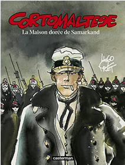

La maison dorée de Samarkand est le huitième album de la série Corto Maltese. Il paraît en France dans le mensuel (A suivre) en 1980 et 1981, puis en album en 1986. Il compte 144 pages.
L'histoire se déroule de de décembre 1921 à septembre 1922, et suit le voyage de Corto et de ses compagnons de Rhodes occupé par les Italiens au Nord-Ouest du Raj Britannique, dans l'actuel Pakistan. Corto cherche le trésor du roi Cyrus II, dissimulé au Kafiristan par Alexandre le Grand, et par la même occasion délivrer son ami (?) Raspoutine, emprisonné à Samarkand dans une prison nommée "La maison dorée". Traversant la Turquie en proie à la guerre civile entre le Mouvement National Turc de Mustafa Kemal et l'Empire Ottoman, soutenu par les Alliés, puis l'Asie Centrale déchirée par les conflits entre forces bolcheviques et émirats locaux, Corto fait de nombreuses rencontres et apprend l'existence d'un militaire turque soutien d' Enver Pasha, Chevket, qui serait son sosie parfait. Une grande partie de l'histoire tourne autour de ces deux personnages, conscients de l'existence de l'autre et se recherchant, mais qui au final ne se voient jamais. Quelques personnages historiques sont mentionnés dans cet épisode: le baron Corvo, Edward Trelawny, Lord Byron, Percy Shelley et John Reed. Raspoutine rencontre par-ailleurs Enver Pasha, et Corto Maltese a une discussion téléphonique avec Iossif Djougachvili. 